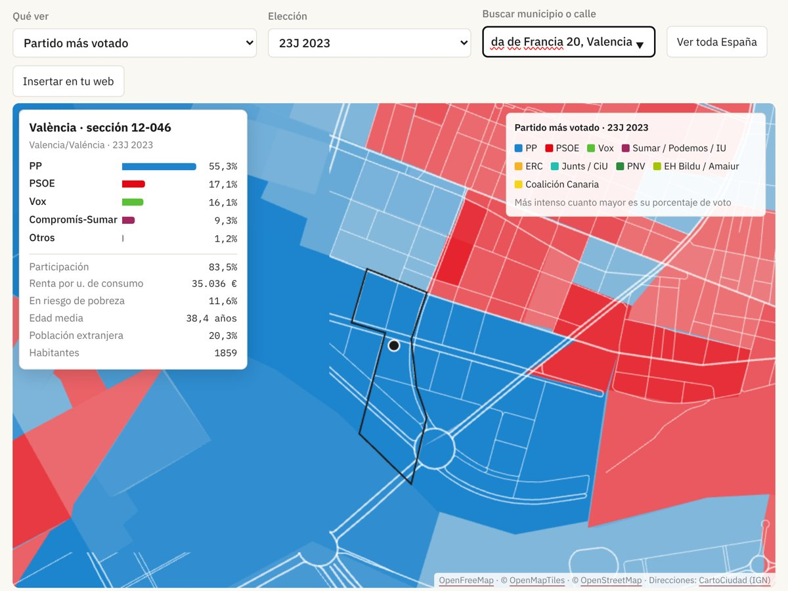

Actualidad · Tu sección, en el mapa · España
Cómo votó tu calle: una de cada cuatro secciones censales eligió en 2023 un ganador distinto al de su municipio
Una guía para buscar tu dirección en el mapa electoral calle a calle: qué es una sección censal, qué datos salen en la ficha de cada una, de dónde vienen y qué no dicen.
Por Nacho G. del Álamo ·

El mapa electoral calle a calle de Mapa Electoral tiene los resultados de las elecciones generales de 2004 a 2023 en las 36.462 secciones censales de España, además de las municipales de 2011 a 2023 y las europeas de 2004 a 2024. Una sección censal es un trozo de barrio, o un pueblo entero, con unos cientos o unos pocos miles de electores: la mediana, en 2023, era de 954. Es la unidad más pequeña con resultados electorales.
El INE la define así: «La sección censal es la división administrativa más detallada del territorio. Construida para el censo electoral, es una subdivisión del municipio y no debe sobrepasar los 2.000 electores, es decir, suele estar por debajo de los 3.000 habitantes» (INE). La regla viene de la ley electoral, que en su artículo 23 dice que «cada Sección incluye un máximo de dos mil electores y un mínimo de quinientos» y que «en cada Sección hay una Mesa Electoral». En las secciones grandes hay varias mesas; el mapa las suma.
A esa escala el mapa cambia. En las generales de 2023, una de cada cuatro secciones (el 25,2% de las que están en municipios con más de una) dio la victoria a un partido distinto del que ganó en su municipio. «Si bajamos al nivel de secciones censales —áreas de apenas 1.000 personas, a veces tan pequeñas como una manzana— aparecen contrastes y matices», escribían Borja Andrino, Luis Sevillano y Kiko Llaneras en El País al publicar su mapa del 23J.
Cómo buscar tu calle
1. Abre el mapa. Está en la portada de Mapa Electoral. Al entrar se ve España por municipios; al acercarte aparecen las secciones.
2. Escribe tu dirección en la casilla «Buscar municipio o calle»: la calle, el número y el municipio, por ejemplo «Avenida de Francia 20, Valencia». Mientras escribes salen sugerencias; elige la tuya. Si no pones número, el mapa va al centro de la calle.
3. Mira la ficha. El mapa se acerca a tu sección, la marca con un borde negro y pone un punto en tu portal. La ficha dice qué partido ganó y con cuánto, la participación, la renta media, el porcentaje de población en riesgo de pobreza, la edad media, la población extranjera y los habitantes.
4. Cambia de elección. En «Elección» están las generales desde 1977, las municipales desde 1979 y las europeas desde 1987. Por sección, desde 2004, salvo las municipales de 2007; antes, solo por municipio.
5. Cambia lo que ves. En «Qué ver» puedes pasar del partido más votado al voto de un solo partido, la participación, la renta, la edad o el paro de cada sección.

En el ejemplo, la sección 12-046 de València votó al PP en 2023 (55,3%), con una participación del 83,5% y una renta de 35.036 euros por unidad de consumo. Unas calles al norte, en El Grau, las secciones son rojas: allí ganó el PSOE. Lo contamos en «La calle que parte el voto».
De dónde salen los datos
Los resultados son los del Ministerio del Interior, mesa a mesa, sumados por sección. La renta, la pobreza, la edad y la población extranjera son del INE, del Atlas de Distribución de Renta de los Hogares de 2023, y los estudios y el paro, del censo de 2021. Las direcciones las busca el geocodificador público del Instituto Geográfico Nacional, CartoCiudad, y el callejero del fondo es de OpenStreetMap.
El INE publica además qué tramos de cada calle pertenecen a cada sección: «El callejero contiene toda la información que identifica plenamente las vías y tramos de vía que pertenecen a cada sección censal» (INE). Es lo que permite saber en qué sección está un portal.
Los mapas por sección se han hecho habituales en las noches electorales. «Los resultados electorales pueden mostrarse todavía con más detalle, como a nivel censal, lo que en los últimos años se ha popularizado como mapas electorales "calle a calle"», explicaba Maldita.es en 2023. Al año siguiente, con las europeas, la misma web recogía un aviso de Raúl Sánchez, coordinador de datos de elDiario.es, sobre las anomalías de esos mapas: «Son errores de los datos provisionales» (Maldita.es). Una sección con un resultado muy raro puede ser un error de transmisión de una mesa.
Qué dice y qué no dice tu sección
La ficha dice cómo votó el conjunto de vecinos de la sección, no cómo votó cada uno. Una sección mezcla calles y portales distintos, y una misma calle puede estar partida entre varias: a veces los números pares van a una y los impares a otra.
Los límites cambian con el tiempo. El INE parte las secciones que crecen y une las que se vacían. En el mapa, las elecciones anteriores a 2023 solo se muestran en las secciones que conservan el mismo código: el 88% en 2004 y el 98% en 2015, según la metodología. Algunas pueden haber cambiado de forma sin cambiar de código.
Falta el voto exterior. Los españoles que viven fuera votan por correo y su voto no se asigna a ninguna sección, así que el reparto difiere unas décimas del oficial y la participación sale más alta. En 2023 fue del 70,4% sin el voto exterior, frente al 66,6% con él.
Y son datos de lugares, no de personas. Que un barrio con más renta vote más al PP no quiere decir que cada vecino con más renta lo haga.
El mapa se puede insertar en otra web con el botón «Insertar en tu web», con la elección y el municipio que tengas elegidos. Los datos tienen licencia CC BY 4.0.
Explora el mapa electoral calle a calle · Más: La calle que parte el voto · Pobreza y participación por barrios · Mapa electoral por sección censal
Método y fuentes
- Qué se compara
- El partido más votado en las generales de 2023 en cada una de las 30.587 secciones censales de municipios con más de una sección, frente al partido más votado en su municipio.
- Límites
- Son datos de secciones, no de personas. Una calle puede estar repartida entre varias secciones. Las secciones cambian de límites: las elecciones anteriores a 2023 solo se muestran en las secciones que conservan el código. Sin voto exterior.
- Cómo se calcula
- Porcentajes sobre votos a candidaturas, salvo la participación, que es sobre el censo. Cifras reproducibles con los scripts del expediente de la pieza. Metodología del Atlas
- Fuentes
- Ministerio del Interior, resultados electorales por mesa (Infoelectoral), vía pollspaindata. Sin voto exterior (CERA)
- INE, Atlas de Distribución de Renta de los Hogares (renta y edad por sección), vía ineAtlas.data
- INE, Atlas de Distribución de Renta de los Hogares 2020, definición de sección censal (7-10-2022)
- Ley Orgánica del Régimen Electoral General, artículo 23
- INE, Cartografía de secciones censales y callejero del Censo Electoral
- CartoCiudad (IGN), geocodificador de direcciones
- El País, el mapa del 23J calle a calle (24-7-2023)
- Maldita.es, el mapa perfecto de resultados no existe (27-7-2023)
- Maldita.es, anomalías en los mapas calle a calle (10-6-2024)
- Autoría
- Nacho G. del Álamo
- Revisión de datos y texto
- Nacho G. del Álamo, 15 de octubre de 2026
- Publicado · actualizado
- 15 de octubre de 2026 · 15 de octubre de 2026
- Correcciones
- Ninguna.
Serie «Camino al 29N»: 43 piezas
- Del 12% al 2,9% y de vuelta al 9,5%: el nacionalismo gallego que deja Beiras
- La Barcelona que tendría que reconquistar Colau: los comuns ganaban en 837 secciones y ahora en 23
- El 29N repite mes con mal recuerdo: el último noviembre dejó la participación más baja de la democracia
- Con Puigdemont de candidato, Junts duplica su voto: del 11% en el Congreso al 22% en el Parlament
- Sumados, ERC y los comuns habrían sido la lista más votada en 1.431 secciones de Cataluña en 2023; por separado, en 232
- Andalucía vota casi diez puntos más al PSOE cuando elige al Gobierno que cuando elige a la Junta
- La huelga del 11N apela a los barrios que menos votan: donde más paro hay, la participación cae al 61%
- En Madrid, el PSOE saca diez puntos más cuando se vota al Gobierno que cuando se vota al alcalde
- El espacio a la izquierda del PSOE fue el más votado en 9.810 secciones en 2015; en 2023, en 182
- Vox saca casi lo mismo donde uno de cada tres vecinos nació fuera que donde casi nadie lo hizo
- Tras el saludo gélido de Sánchez en el 12‑O: en Madrid, el PP de Almeida sacó más votos que el de Feijóo, con 85.000 votantes menos
- La aceituna de mesa, por debajo de coste: en sus dos grandes comarcas, el PP no ganó en ninguno de los 23 pueblos en 2023
- Qué provincias pueden decidir el 29N: en 17, el último escaño se resolvió en 2023 por menos de 5.000 votos
- Dónde puede costar más la división a la izquierda: en ocho provincias, Sumar ganó o perdió un escaño en 2023 por menos de 5.000 votos
- Vivienda, inmigración y economía: en el CIS de octubre la vivienda salta del 37,5% al 55,7% y ya es el problema más citado por los votantes de PP, PSOE y Sumar
- Abascal promete pagar las pensiones «como sea», pero Vox saca su peor resultado en los barrios más envejecidos: 9,8%, frente al 16,2% en los más jóvenes
- EAPN presenta su informe sobre pobreza y territorio: en los barrios más pobres se vota 15 puntos menos que en los más ricos, el doble de distancia que en 2004
- Once ministros en las listas del PSOE: con los votos de 2023, el puesto más ajustado es el de Ana Redondo en Valladolid, que caería si el PSOE perdiera el 17% de sus votos
- Ciudadanos se suma a Democracia 21 en Madrid y Barcelona: en los barrios madrileños donde Cs fue más fuerte en 2019, el PP pasó del 18,2% al 49,2% en 2023
- El CEO da a Aliança Catalana hasta 25 escaños: en el Parlament de 2024 sacó el 3,8%, pero el 24,9% en el Ripollès y el 7,8% en los pueblos de menos de 1.000 electores
- Estás aquíCómo votó tu calle: una de cada cuatro secciones censales eligió en 2023 un ganador distinto al de su municipio
- La calle que parte el voto: el PP sacó el 55,9% a un lado de la avenida de Francia, en València, y el 16,4% al otro
- Madrid llega al 29N teñida de azul: el PP ganó en 1.603 de sus 2.450 secciones y el PSOE solo resiste en cuatro distritos del sur
- Barcelona pasó del amarillo al rojo: ERC ganó en 563 secciones en 2019 y en ninguna en 2023
- València borró a Compromís del mapa: ganaba en 101 secciones en 2019 y en 15 en 2023
- Sevilla tiene dos mapas: el PP ganó en votos el 23J, pero el PSOE fue el primero en 286 de sus 521 secciones
- Zaragoza, empate barrio a barrio: el PSOE ganó en 250 secciones y el PP en 245, y 53 se decidieron por menos de dos puntos
- En Málaga, la renta decide quién vota: el 46,7% en los barrios más pobres y el 80,6% en los más ricos
- Murcia, de verde a azul: Vox ganó en 164 secciones en 2019 y en una en 2023
- Palma, la gran ciudad que menos vota: el 62,5% en 2023, y menos del 35% en algunas secciones del este
- Montse Mínguez, entre los pisos de su pareja y un escaño en el aire: el PSC duplicó su voto en Lleida y le ganó el cuarto diputado al PP por unos 3.500 votos
- El Rey visita las dos ciudades que menos votan: en Melilla votó el 49,8% en 2023, y en una sección de la periferia, el 19%
- Un diputado cuesta 25.300 votos en Teruel y 97.500 en Madrid: el precio del escaño, provincia a provincia
- 1,9 millones de votos no eligieron a nadie en 2023: en Teruel, Lleida y Soria, uno de cada tres
- Feijóo y Sánchez chocan por las pensiones en un censo con 10,2 millones de electores de 65 años o más: superan a los de 18 a 34 en 49 de las 52 provincias
- El CIS de Tezanos da al PSOE 11,8 puntos de ventaja: en las tres generales desde 2019 sobrestimó su margen sobre el PP entre 1 y 6,9 puntos
- Rufián admite «He fracasado»: con los votos de 2023, ERC y Sumar juntos habrían sacado un solo diputado más en Cataluña, y por 126 votos
- Ocupación: en las provincias con más demandas ante los juzgados, Vox sacó el 15,9% en 2023, frente al 11,5% en las que menos
- Frente Amplio y Podemos solo irán juntos en cinco provincias: en las otras 47, Sumar sacó 26 de sus 31 diputados en 2023
- El Supremo deja sin voto a 163.020 nacionalizados por la ley de nietos: en 2023, el voto exterior ya le dio al PP un escaño del PSOE en Madrid
- PSOE y Frente Amplio, juntos al Senado: con los votos de 2023, su lista habría ganado al PP en 16 provincias donde este sacó tres senadores
- Albiol, cabeza de lista del PP por Barcelona: en Badalona sacó el 55,7% en las municipales de 2023 y dos meses después el PP se quedó en el 16,6%
- Dimite la lista del PSOE en Palencia tras imponer Ferraz a Martínez Seijo: en 2023 al partido le faltaron 7.097 votos para un segundo diputado
Más datos: mapa electoral de España por sección censal.
Sigue leyendo
- La acampada de SolAlmeida pone a los acampados de Sol «en el mismo plano» que los ultras: Centro, el distrito con más inquilinos de Madrid, es donde Más Madrid y Podemos-IU sacaron su mejor resultado, el 41%
- El precio del alquilerEl alquiler sube un 29% en València desde 2015, pero el voto apenas lo refleja
- El PSOE y el alquilerEl PSOE sube en los barrios de alquiler casi el triple que en los de propietarios desde 2015
- ActualidadTodas las piezas de actualidad
- AtlasAtlas de las anomalías electorales